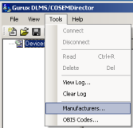
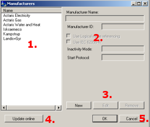

Supported Device ManufacturersTo view the list of manufacturers, whose devices havebuild-in support in Gurux GXDLMS/COSEMDirector, select Manufacturers..., in the Tools menu. |  | |
In the opening Manufacturers dialog
Below the settings are (3) buttons to
and below them, (4) button to update manufacturer settings online, and (5) buttons to confirm, or cancel the removal. |  |
Add a manufacturer in the list
- In the Manufacturers dialog, click the New button.
- In the opening Manufacturer Settings dialog (picture below)
- enter the Name and ID of the manufacturer company
- formal names and IDs of device manufacturers listed at
http://www.dlms.com/organization/flagmanufacturesids/index.html
- formal names and IDs of device manufacturers listed at
- check, whether to use Logical name referencing
- using Logical Names (LN) is based on OBIS codes
- Short Names (SN) use simply register addresses
- check, whether to use IEC 62056-47
- COSEM transport layers for IPv4 networks
- relevant only with Network connection
- select what to do, when there is no data traffic, by setting the Inactivity Mode
(an example below)- None = nothing is done
- KeepAlive = the Alive message is sent, according to the time set in KeepAlive Interval
- Reopen = connection is opened again
- ReopenActive = the connection to the device is opened again, even during data transfer
- set the time (in seconds) waited before, and in between, operations by setting the KeepAlive Interval
- select the Start Protocol
- starting protocol: IEC (default) or straight DLMS
- In the Addressing section
- check, whether to Enable authentication, and select Authentication level None / Low / High
- set Client Address in Hex
- In the Server Address section
- select the Address Type:
- Default (according to the standard),
- SerialNumber (used in multi-drop connections to get a unique HDLC address for each device), or
- Custom (for devices that do not support the standard)
- select the Type of the server address: Byte / UInt16 / UInt32
- enter Serial Number Formula, if using SerialNumber Address Type
- set the Physical and Logical address, to form the server address
- select the Address Type:
- Finally, to close the Manufacturer Settings dialog, and save the added manufacturer, click OK.
- enter the Name and ID of the manufacturer company
- Back in the Manufacturers dialog, click the OK button.
- Exit, and restart GuruxDLMSDirector, for the changes to take effect.
Note: The settings set here are used by default, when adding a new device in the system.
However, some of the manufacturer dependent settings can be changed for a device, when adding it.
 |
About Inactivity Mode and KeepAlive Interval By default an Alive message is sent to the device, if there has been no traffic for a determined time. The time is determined by setting the KeepAlive Interval. If the device replies to the message, the determined time is waited, and a new message is sent, and so on. But if the determined time goes by, and no answer is received from the device, the operation set in Inactivity Mode is carried out. For example: You set KeepAlive Interval to 40, and Inactivity Mode to Reopen. After no traffic has been detected for 40 seconds, an Alive message is sent to the device. If the device replies to the message, 40 seconds is waited, and a new message is sent, and so on. But if no answer is received in 40 seconds, the connection to the device is closed, and then opened again. |
Edit manufacturer specific settings
- In the Manufacturers dialog, select the manufacturer, whose settings to edit.
- Click the Edit button.
- In the opening Manufacturer Settings dialog, edit the required settings.
- Save the changes by clicking the OK button.
- Back in the Manufacturers dialog, click the OK button.
- The Manufacturer ID is not editable, once it is set. This is to avoid errors that occur, if the ID is changed by mistake.
- If the Manufacturer ID needs to be changed, you need to
- Create a new Manufacturer with a correct ID.
- Remove the one with the incorrect ID.
Remove a manufacturer from the list
To remove an existing manufacturer from the list- Select the manufacturer to remove.
- Click Remove button.
- Click OK button to confirm the removal.